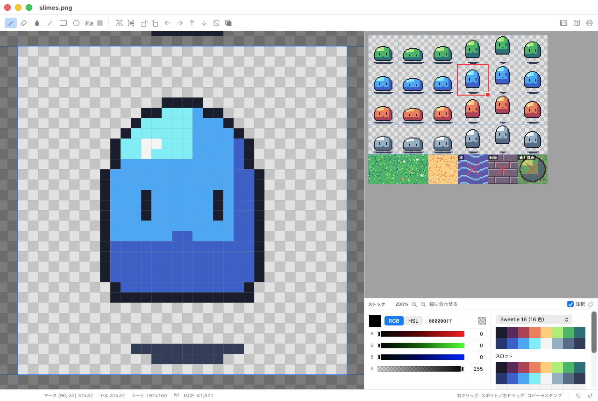

見渡して、描く。
右のストックでセルを選び、
左のメインで拡大して描く。
入れ替えも、コピーも、マウスだけで。
A sprite sheet editor for Mac.
歩行グラフィックやマップチップのような、小さな絵が並んだシートのためのドット絵ツール。
DotPainter ALFAR の操作感を手本に、いまのMacに合わせて作りました。
macOS 14 以降 · ソースからビルドする

右のストックでセルを選び、
左のメインで拡大して描く。
入れ替えも、コピーも、マウスだけで。
右クリックでスポイト。
右ドラッグでコピーして、
そのままスタンプで押していく。
アニメは描いた先から再生。
前後のコマをオニオンスキンで重ねて、
GIF・APNG・連番PNGで書き出せます。
描いたチップをその場でマップに仮組み。
レイヤーを重ねて、
つなぎ目や見え方を確かめられます。
セルごとに名前・通行可否・重なり順。
シートの横に置くJSONに保存するので、
ゲーム側からそのまま読めます。
フォントと大きさを選んで、
にじまないドットの文字を置けます。
日本語も、改行も。
nanodot は MCP サーバーを内蔵しています。
Claude Code などのエージェントが、シートを見ながら
描いたり、色違いを作ったり、マップを組んだり。
このMacの中だけで待ち受けます。
1. ⚙ の設定で「MCP サーバー」をオン
2. エージェントに登録
claude mcp add --transport http \
nanodot http://127.0.0.1:47621/mcp3. 頼んでみる
32×32 のセルで草・土・水・岩のタイルを描いて、
水と岩は通行不可にしてmacOS 14 以降 · 保存は素の PNG ＋ .nanodot.json
GitHub · ソースからビルドする